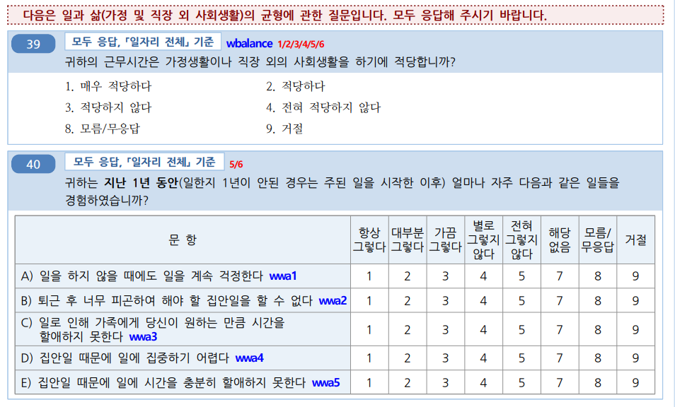

rm(list=ls())
if(!require("tidyverse")) install.packages("tidyverse")
if(!require("htmlTable")) install.packages("htmlTable")
if(!require("haven")) install.packages("haven")
if(!require("broom")) install.packages("broom")6 보건학표_2
6.1 데이터 준비
데이터 표를 만드는 실습은 6차 근로환경조사 자료를 통해 실습할 것입니다.. 자료는 안전보건공단, 근로환경조사 원시자료 사이트 (http://kosha.or.kr/kosha/data/primitiveData.do) 에서 신청할 수 있습니다..
데이터 표를 만드는 실습은 6차 근로환경조사 자료를 통해 실습할 것입니다.. 자료는 안전보건공단, 근로환경조사 원시자료 사이트 (http://kosha.or.kr/kosha/data/primitiveData.do) 에서 신청할 수 있습니다.. 데이터를 불러오겠습니다. 안전보건공단 홈페이에서 자료를 다운 받는게 원칙입니다. 다만 실습을 빠르게 진행하기 위해서, dspubs.org 페이지에 있는 파일을 이용하겠습니다.
kwcsData6th.rds
자신의 folder에 data 라는 folder가 있는지 확인하십시오. data라는 폴더에 다운로드하고, 불러오도록 하겠습니다.
url <- "https://raw.githubusercontent.com/jinhaslab/opendata/main/kwcs/kwcsData6th.rds"
download.file(url, "data/tutorKWCS.rds")kwcs = readRDS("data/tutorKWCS.rds")6.2 분석 주제 선정
우선 수면 장애를 중심으로 연구를 하기로 했습니다. 이때 장시간 근무가 수면장애를 일으킬 수 있다는 가정을 했습니다. 기존 연구에서 유사한 내용이 있었기 때문입니다. 그 이유를 생각해보니, 오래 일하면 어떤 방식으로든 수면시간 자체가 줄어들 것으로 보였기 때문입니다. 우선 sleep disturbance, long working hours per week 이 정해졌습니다. 이후 연구방법론의 혼란변수 선정 방법이나, 연구자의 Domain knowledge에 따른 선정, 새로운 가설 개발 (originality) 위한 변수 선정등을 고려할 수 있습니다. 이러한 내용은 각각의 연구방법론 수업에서 학습하시기를 바랍니다.
여러 토론을 하다보니, 일을 마치고 집에 돌아온 후 해야할 일이 많은 경우 수면장애가 발생할 것 같은 느낌이 들었습니다. 이 것을 확인해 보고자 합니다.
즉, 장시간근로와 일과 삶의 균형에 따른 수면장애 관련성을 연구해 보고 싶습니다.

이제 data manipulation, long wide 변환을 통해 실습을 해보겠습니다.
6.2.1 근로환경조사와 recode (선택사항)
번외로 분석을 빠르게 진행하기 위해 recode에 대한 복습을 해 보겠습니다. recode는 아주 단순한 변경에 사용되는데요, 근로환경조사는 이미 변수를 1, 2, 3, 4, 5 의 순서를 Likert 척도로 사용하고 있습니다.
근로환경조사 Likert 척도
| 근로환경조사 | Likert 척도 |
|---|---|
| 얼마나 자주 그렇습니까(freq)? | “4.Always”, “3.Often”, “2.Sometimes”, “1.Rarely”, “0.Never” |
| 얼마나 자주 그렇습니까(time)? | “5.All of the time”, “4.Most of the time”, “3.More than half of the time”, “2.less than half of the time”, “1.Some of the time”, “0.At no time” |
| 얼마나 적당 합니까? | “3.Very well”, “3.Well”, “2.Not very well”, “0.Not at all well” |
이것을 이용하면 매우 쉽게 정리할 수 있습니다.
- wwa4: 집안일 때문에 집중하기 어렵다가
- 1: 항상그렇다,
- 2: 대부분그렇다.
- 3: 가끔 그렇다
- 4: 별로 그렇지 않다.
- 5: 전혀 그렇지 않다 로 되어 있습니다.
recode
아래의 함수 결과를 살펴보면, 숫자의 경우 순서에 따라 문자를 어사인하는 것을 볼 수 있습니다. 데이터가 정형화되어 정리되어 있는 경우, 그리고 숫자인경우, case_when 이나 ifelse보다 더 쉬운 방법입니다.
vars = c(1, 1, 1, 3, 3, 3, 2, 2, 2, 4, 4, 4)
r1 = recode(vars, `1`= "a", `2`= "b", `3`= "c", `4`= "d")
r1 [1] "a" "a" "a" "c" "c" "c" "b" "b" "b" "d" "d" "d"r2 = recode(vars, "a", "b", "c", "d")
r1 == r2 [1] TRUE TRUE TRUE TRUE TRUE TRUE TRUE TRUE TRUE TRUE TRUE TRUE문자일 때는 어떨까요? 문자는 순서를 특정화 해주지 않았으므로 어렵습니다. 근로환경조사는 대부분 문자로 저장되어 있습니다.
vars_char = as.character(vars)
r3 = recode(vars_char, "a", "b", "c", "d")
r3_n = recode(as.numeric(vars_char), "a", "b", "c", "d")이를 as.numeric을 통해 숫자로 변형시켜준 후 시행하면 잘 작동합니다.
vars_char = as.character(vars)
r3_n = recode(as.numeric(vars_char), "a", "b", "c", "d")이제 kwcs 에서 wwa1부터 wwa5까지를 가져와 역순으로 Likert 척도를 구해보겠습니다.
wwas = kwcs %>% select(TSEX, contains("wwa"))
wwas %>% head()# A tibble: 6 × 11
TSEX wwa1 wwa2 wwa3 wwa4 wwa5 wwa1gp wwa2gp wwa3gp wwa4gp
<dbl+lbl> <dbl+lb> <dbl+l> <dbl+l> <dbl+l> <dbl+l> <chr> <chr> <chr> <chr>
1 2 [여성] 5 [전혀… 4 [별… 5 [전… 5 [전… 5 [전… 0.Nev… 1.Rar… 0.Nev… 0.Nev…
2 2 [여성] 4 [별로… 3 [가… 3 [가… 4 [별… 4 [별… 1.Rar… 2.Som… 2.Som… 1.Rar…
3 2 [여성] 4 [별로… 4 [별… 4 [별… 4 [별… 4 [별… 1.Rar… 1.Rar… 1.Rar… 1.Rar…
4 2 [여성] 5 [전혀… 5 [전… 5 [전… 5 [전… 5 [전… 0.Nev… 0.Nev… 0.Nev… 0.Nev…
5 1 [남성] 5 [전혀… 5 [전… 5 [전… 5 [전… 5 [전… 0.Nev… 0.Nev… 0.Nev… 0.Nev…
6 2 [여성] 5 [전혀… 4 [별… 4 [별… 5 [전… 5 [전… 0.Nev… 1.Rar… 1.Rar… 0.Nev…
# ℹ 1 more variable: wwa5gp <chr>Quizz1: wwa1 변수에서 1의 값을 갖는 것은 남녀 별로 각각 몇명일까요? (script 안에 count 를 이용해서 작성해 보세요)
wwas %>%
group_by(TSEX) %>%
[ script ]이제 recode를 이용해 변환해 보겠습니다.
- wwa 관련 변수를
- 1: 항상그렇다 → “4.Always”
- 2: 대부분그렇다 → “3.Often”
- 3: 가끔 그렇다 → “2.Sometimes”
- 4: 별로 그렇지 않다 → “1.Rarely”
- 5: 전혀 그렇지 않다 →“0.Never” 로 변경해 보겠습니다.
첫번째는 case_when으로 두번째는 recode로 변경했습니다. 누가 더 쉬운가요?
test = wwas %>%
mutate(wwa1gp1 = case_when(
wwa1 ==1 ~ "4.Always",
wwa1 ==2 ~ "3.Often",
wwa1 ==3 ~ "2.Sometimes",
wwa1 ==4 ~ "1.Rarely",
wwa1 ==5 ~ "0.Never"
)) %>%
mutate(wwa1gp2 = recode(as.numeric(wwa1),
"4.Always","3.Often","2.Sometimes", "1.Rarely","0.Never"
))
test %>%
mutate(diff = wwa1gp1 == wwa1gp2) %>%
pull(diff) %>% table(.).
TRUE
41108 코드가 길어지는 것은 누군가와 소통하는데 장벽이 될수 있습니다. 반복적인 것은 함수를 만들어 요약할 수 있습니다.
Likerts = function(x){
recode(as.numeric(x),
"4.Always","3.Often","2.Sometimes", "1.Rarely","0.Never"
)
}
wwas %>%
mutate(wwa1gp1 = recode(as.numeric(wwa1),
"4.Always","3.Often","2.Sometimes", "1.Rarely","0.Never"
)) %>%
mutate(wwa1gp2 = Likerts(wwa1)) %>%
mutate(diff = wwa1gp1 == wwa1gp2) %>%
pull(diff) %>% table(.).
TRUE
41108 6.2.2 근로환경조사 기본 변수 생성
data manipulation에서 실습한 내용을 통해 변수를 생성해 보겠습니다.
# data manip function
Likert5f = function(x){dplyr::recode(as.numeric(x),
"4.Always","3.Often","2.Sometimes", "1.Rarely","0.Never" )}
# data step start ----------
dat1 = kwcs %>%
filter(AGE <70) %>%
filter(AGE >18) %>%
# sleep --------
filter(!is.na(sleep1)&!is.na(sleep2)&!is.na(sleep3)) %>%
filter(sleep1 %in% c(1:5),
sleep2 %in% c(1:5),
sleep3 %in% c(1:5)) %>%
mutate(sleep1in = 5-sleep1,
sleep2in = 5-sleep2,
sleep3in = 5-sleep3
) %>%
mutate(sleepgp = case_when(
sleep1in + sleep2in+ sleep3in >=6 ~ "1.sleep disturbance",
TRUE ~ "0.non distrubance"
)) %>%
# work life balances -------------
filter(!is.na(wbalance), !is.na(wwa1), !is.na(wwa2), !is.na(wwa3), !is.na(wwa4), !is.na(wwa5)) %>%
filter(!is.na(wbalance)) %>%
mutate(wbalancegp = case_when(
wbalance %in% c(1, 2) ~ "0.balance",
TRUE ~ "1.non balance"
)) %>%
mutate(wwa1gp=Likert5f(wwa1), wwa2gp=Likert5f(wwa2), wwa3gp=Likert5f(wwa3),
wwa4gp=Likert5f(wwa4), wwa5gp=Likert5f(wwa5),
) %>%
# job and sex, agegp ----------
filter(!is.na(job1))%>%
filter(job1 %in% c(1, 2, 3)) %>%
mutate(sexgp = case_when(
TSEX ==1 ~ "Men",
TRUE ~ "Women"
)) %>%
mutate(agegp = case_when(AGE <25 ~ "<25", AGE <30 ~ "<30", AGE <35 ~ "<35",
AGE <40 ~ "<40", AGE <45 ~ "<45", AGE <50 ~ "<50",AGE <55 ~ "<55", AGE <60 ~ "<60",
TRUE ~ "\u226560" # 나머지는 모두 >65 (\u2265는 크거나 같다는 symbol)
)) %>%
filter(!is.na(edu)) %>% filter(edu %in% c(1:7)) %>%
mutate(edugp = case_when(
edu %in% c(1:3) ~ "2.middle school or below",
edu %in% c(4 ) ~ "1.high school",
edu %in% c(5:7) ~ "0.university or more"
)) %>%
mutate(njob=case_when(
job1 %in% c(2, 3) ~ "1.njob",
TRUE ~ "0.one-job")) %>%
# back pains -----------
mutate(backpain= case_when(
heal_prob1==1 ~ "pain",
TRUE ~ "no-pain")) %>%
# emp_type,working hours, shiftwork, work life balance -------
filter(!is.na(emp_type)) %>%
filter(emp_type %in% c(1:4)) %>%
mutate(empgp = case_when(
emp_type ==1 ~ "2.own-account worker",
emp_type ==2 ~ "1.employer/self-employer",
emp_type ==3 ~ "0.paid-worker",
emp_type ==4 ~ "3.unpaind family work"
)) %>%
filter(!is.na(wtime_week)) %>%
mutate(whgp=case_when(
wtime_week < 35 ~ "<35",
wtime_week < 40 ~ "<40",
wtime_week < 52 ~ "<52",
wtime_week < 60 ~ "<60",
TRUE ~ "\u226560",
)) %>%
filter(!is.na(wtime_length5)) %>%
filter(wtime_length5 %in% c(1, 2)) %>%
mutate(shiftWork = case_when(
wtime_length5 ==1 ~ "1.shift work",
TRUE ~ "0.non shift work"
)) %>%
filter(!is.na(wtime_resilience)) %>%
mutate(shortReturn = case_when(
wtime_resilience ==1 ~ "1.short return",
TRUE ~ "0.non short return"
)) %>%
filter(!is.na(satisfaction)) %>%
filter(satisfaction %in% c(1:4)) %>%
mutate(satisInv = 5-satisfaction) %>%
mutate(shiftShort=case_when(
shiftWork == "1.shift work" & shortReturn == "1.short return" ~ "3.shift work with short return",
shiftWork == "1.shift work" & shortReturn != "1.short return" ~ "2.shift work",
shiftWork != "1.shift work" & shortReturn == "1.short return" ~ "1.day work with short return",
shiftWork != "1.shift work" & shortReturn != "1.short return" ~ "0.day work",
)) 6.3 근로환경조사 Table 1 만들기
지금까지 작업을 통해 분석한 변수를 선정합니다. 이때 정리할 부분은 무엇으로 구분할지, 관심변수는 무엇인지 이중 명목변수와 연속변수는 무엇인지를 구분하는 것입니다.
## Variables selection
stratas = c("sleepgp")
catVars = c(
# interesting
#"wbalancegp",
"wwa1gp", "wwa2gp","wwa3gp","wwa4gp","wwa5gp",
# confounder
#"whgp",
"shortReturn",#"shiftWork" , #"njob",
# demograhpics
"sexgp", #"agegp",
"edugp", "empgp" #, "backpain"
)
conVars = c("AGE","satisfaction")6.3.1 변수 값 요약하기
아래 코드가 뜻하는 것은 무엇일까요? 하나하나 살펴보아야 합니다. Table을 만들때 long file 형태로 만든 것입니다.
catTab = dat1 %>%
select(stratas, all_of(catVars)) %>%
pivot_longer(-c(stratas), names_to = "variables", values_to ="values")%>%
group_by( variables, values) %>%
count(!!sym(stratas)) %>%
mutate(prob = n/sum(n),
smry= sprintf("%.0f (%.1f%%)", n, prob*100)
) %>%
select(-n, -prob) %>%
ungroup() %>%
pivot_wider(names_from = stratas, values_from =smry) 아래 코드가 뜻하는 것은 무엇일까요? 하나하나 살펴보아야 합니다. Table을 만들때 long file 형태로 만든 것입니다.
conTab =
dat1 %>%
select(stratas, all_of(conVars)) %>%
pivot_longer(-c(stratas), names_to = "variables", values_to ="values")%>%
group_by( !!sym(stratas), variables) %>%
summarise(avg = mean(values, na.rm =TRUE),
std = sd(values, na.rm =TRUE)
) %>%
mutate(smry = sprintf("%.1f\u00b1%.1f", avg, std)) %>%
select(stratas, variables, smry)%>%
ungroup() %>%
pivot_wider(names_from = stratas, values_from =smry) %>%
mutate(values ="") 명목변수 요약 표 catTab과 연속편수 요약표 conTab을 합쳐 보겠습니다. rbind는 종으로 합친다는 뜻입니다.
tabDat = rbind(catTab, conTab)6.3.2 P value 구하기.
이제 P value를 구해보겠습니다. 명목변수는 카이검정, 연속변수는 T검정을 해보겠습니다.
Chisq-Test
Cross Table을 만든 다음, chisq.test() 명령을 통해 수행합니다.
tab= data.frame(A = c(1000, 2000),
B = c(100, 300))
tab A B
1 1000 100
2 2000 300chisq.test(tab)
Pearson's Chi-squared test with Yates' continuity correction
data: tab
X-squared = 10.821, df = 1, p-value = 0.001003T.Test
두 연속변수로 구성된 Data를 만들고 t.test() 명령을 통해 수행합니다.
tab = data.frame(A=rnorm(100),
B=rnorm(100)+0.3)
t.test(tab)
One Sample t-test
data: tab
t = 3.5089, df = 199, p-value = 0.0005564
alternative hypothesis: true mean is not equal to 0
95 percent confidence interval:
0.1156374 0.4123731
sample estimates:
mean of x
0.2640053 이것을 이용해서 카이검정과 T검정을 수행해보겠습니다.
가장 정확하면서 쉬운 방식은 반복하는 것입니다. 우리가 이미 변수 값을 long file을 통해 정리하는 것을 실습하였기 때문에, 이 방식도 long file을 이용하겠습니다.
이때 중요한 개념임 map, nest, tidy가 나옵니다.
map, nest, tidy
각 백터 값에 대해서 함수를 실행한다.
1:5 %>%
map(function(x){x^2})[[1]]
[1] 1
[[2]]
[1] 4
[[3]]
[1] 9
[[4]]
[1] 16
[[5]]
[1] 25tibble(a=1:5, b=6:10) %>%
map(sum)$a
[1] 15
$b
[1] 40이번에는 좀 복잡한 것을 해보겠습니다 아래와 같이 두 집단에 대해서 size와 power를 각 20명에게 측정했다고 가정합시다. 그리고 size와 power를 동시에 측정하고 측정 순서대로 데이터를 정리한 것입니다. 이후 G1과 G2의 Size와 Power에 대해 T.test를 수행하겠습니다.
test = tibble(
Variables= rep(c("Size","Power"), each=20),
G1= c(rnorm(20), rnorm(20)),
G2= c(rnorm(20)-0.3, rnorm(20)+0.3),
)일반적 방식은 아래와 같습니다. 이것을 반복하면 되는 것입니다.
test %>% filter(Variables=="Size") %>%
select(-Variables) %>%
t.test(.)
One Sample t-test
data: .
t = 1.2216, df = 39, p-value = 0.2292
alternative hypothesis: true mean is not equal to 0
95 percent confidence interval:
-0.1110549 0.4497403
sample estimates:
mean of x
0.1693427 t.test(test[test$Variables=="Size", ]$G1,
test[test$Variables=="Size", ]$G2)
Welch Two Sample t-test
data: test[test$Variables == "Size", ]$G1 and test[test$Variables == "Size", ]$G2
t = 0.88965, df = 37.99, p-value = 0.3793
alternative hypothesis: true difference in means is not equal to 0
95 percent confidence interval:
-0.3154596 0.8100985
sample estimates:
mean of x mean of y
0.29300245 0.04568298 이에 이것을 반복 수행하기 위해, data를 slice 하여 하나의 list로 만드는과정을 하겠습니다. nest의 과정입니다. 이후 각 데이터에 map을 이용해서 반복 수행을 하겠습니다. 그리고 그 값을 정리하여 unnest하는 과정이 필요합니다. 필요한 값인 p. value만 남겨 정리합니다.
test1 = test %>%
nest(dat = -Variables) %>%
mutate(fit=map(dat, ~t.test(.x)),
tidied=map(fit, tidy))
test1 %>% unnest(tidied) %>%
select(Variables, p.value)# A tibble: 2 × 2
Variables p.value
<chr> <dbl>
1 Size 0.229
2 Power 0.00790지금까지 사용한 것을 가지고, 명목변수에서는 Chisq-Test, 연속변수에서 t.test 를 수행하여 정리하겠습니다.
명목변수, chisq.test
catPvalue =
dat1 %>%
select(stratas, catVars) %>%
pivot_longer(-c(stratas), names_to = "variables", values_to ="values")%>%
group_by(variables, values) %>%
count(!!sym(stratas)) %>%
pivot_wider(names_from = stratas, values_from =n) %>%
ungroup() %>%
select(-values) %>%
nest(dat = -variables) %>%
mutate(
fit = map(dat,
~chisq.test(.x)),
tidied = map(fit, tidy)
) %>%
unnest(tidied) %>%
select(variables, p.value) %>%
mutate(p.value = ifelse(p.value <0.001, "<0.001", sprintf("%.3f", p.value)))연속변수, t.test
conPvalue=dat1 %>%
mutate(stratas = !!sym(stratas)) %>%
select(stratas, conVars) %>%
pivot_longer(-c(stratas), names_to = "variables", values_to ="values") %>%
nest(dat = -variables) %>%
mutate(
fit =map(dat, ~t.test(.$values ~ .$stratas)),
tidied=map(fit, tidy)
) %>%
unnest(tidied) %>%
select(variables, p.value) %>%
mutate(p.value = ifelse(p.value <0.001, "<0.001", sprintf("%.3f", p.value)))P.valeu 합치기
tabPvalue = rbind(catPvalue, conPvalue)표가 어떤 순서대로 표현될지에 대한 순서를 정합니다.
varOrder = tibble("variables"=c(catVars, conVars)) %>%
mutate(order = row_number())
varOrder# A tibble: 11 × 2
variables order
<chr> <int>
1 wwa1gp 1
2 wwa2gp 2
3 wwa3gp 3
4 wwa4gp 4
5 wwa5gp 5
6 shortReturn 6
7 sexgp 7
8 edugp 8
9 empgp 9
10 AGE 10
11 satisfaction 116.4 Table 1 정리하기
이제 변수값 요약과, p.value를 합치고, 순서에 맞게 정리하겠습니다.
tab1 = tabDat %>%
left_join(tabPvalue, by=c("variables")) %>%
left_join(varOrder, by = c("variables")) %>%
arrange(order, values) %>%
group_by(variables) %>%
mutate(ranks = row_number()) %>%
mutate(p.value = ifelse(ranks==min(ranks), p.value, "")) %>%
mutate(variables = ifelse(ranks==min(ranks), variables, "")) %>%
ungroup() %>%
select(-order, -ranks)%>%
mutate(values = str_replace(values, "[:digit:]\\.", ""))이것을 htmlTable로 나타내면 다음과 같습니다.
tab1 %>% htmlTable()| variables | values | 0.non distrubance | 1.sleep disturbance | p.value | |
|---|---|---|---|---|---|
| 1 | wwa1gp | Never | 12222 (94.7%) | 684 (5.3%) | <0.001 |
| 2 | Rarely | 12316 (94.5%) | 714 (5.5%) | ||
| 3 | Sometimes | 9112 (90.3%) | 981 (9.7%) | ||
| 4 | Often | 3456 (82.8%) | 717 (17.2%) | ||
| 5 | Always | 634 (70.0%) | 272 (30.0%) | ||
| 6 | wwa2gp | Never | 12432 (95.4%) | 597 (4.6%) | <0.001 |
| 7 | Rarely | 13682 (94.1%) | 863 (5.9%) | ||
| 8 | Sometimes | 8882 (89.2%) | 1072 (10.8%) | ||
| 9 | Often | 2460 (79.4%) | 638 (20.6%) | ||
| 10 | Always | 284 (58.9%) | 198 (41.1%) | ||
| 11 | wwa3gp | Never | 13472 (95.2%) | 682 (4.8%) | <0.001 |
| 12 | Rarely | 13938 (93.1%) | 1040 (6.9%) | ||
| 13 | Sometimes | 7749 (89.9%) | 868 (10.1%) | ||
| 14 | Often | 2314 (79.5%) | 597 (20.5%) | ||
| 15 | Always | 267 (59.6%) | 181 (40.4%) | ||
| 16 | wwa4gp | Never | 18708 (94.1%) | 1169 (5.9%) | <0.001 |
| 17 | Rarely | 14799 (91.6%) | 1362 (8.4%) | ||
| 18 | Sometimes | 3348 (85.0%) | 592 (15.0%) | ||
| 19 | Often | 805 (80.7%) | 193 (19.3%) | ||
| 20 | Always | 80 (60.6%) | 52 (39.4%) | ||
| 21 | wwa5gp | Never | 19061 (93.9%) | 1245 (6.1%) | <0.001 |
| 22 | Rarely | 14770 (91.6%) | 1349 (8.4%) | ||
| 23 | Sometimes | 3180 (85.3%) | 550 (14.7%) | ||
| 24 | Often | 682 (79.8%) | 173 (20.2%) | ||
| 25 | Always | 47 (48.0%) | 51 (52.0%) | ||
| 26 | shortReturn | non short return | 36183 (92.5%) | 2927 (7.5%) | <0.001 |
| 27 | short return | 1557 (77.9%) | 441 (22.1%) | ||
| 28 | sexgp | Men | 17892 (93.1%) | 1327 (6.9%) | <0.001 |
| 29 | Women | 19848 (90.7%) | 2041 (9.3%) | ||
| 30 | edugp | university or more | 19597 (92.9%) | 1502 (7.1%) | <0.001 |
| 31 | high school | 14943 (91.9%) | 1318 (8.1%) | ||
| 32 | middle school or below | 3200 (85.4%) | 548 (14.6%) | ||
| 33 | empgp | paid-worker | 25786 (92.4%) | 2122 (7.6%) | <0.001 |
| 34 | employer/self-employer | 2539 (91.7%) | 229 (8.3%) | ||
| 35 | own-account worker | 8359 (90.5%) | 880 (9.5%) | ||
| 36 | unpaind family work | 1056 (88.5%) | 137 (11.5%) | ||
| 37 | AGE | 46.8±12.4 | 49.7±11.9 | <0.001 | |
| 38 | satisfaction | 2.1±0.5 | 2.4±0.6 | <0.001 |
6.4.1 htmlTable visulaization
테이블이 너무 길기 때문에, wwa2, wwa3, wwa4, wwa5, 는 제외하고 표를 만들겠습니다.
tab2 = tab1 %>% slice(-c(6:25))
tab2 %>%
`rownames<-`(NULL) %>%
htmlTable(rnames = FALSE) | variables | values | 0.non distrubance | 1.sleep disturbance | p.value |
|---|---|---|---|---|
| wwa1gp | Never | 12222 (94.7%) | 684 (5.3%) | <0.001 |
| Rarely | 12316 (94.5%) | 714 (5.5%) | ||
| Sometimes | 9112 (90.3%) | 981 (9.7%) | ||
| Often | 3456 (82.8%) | 717 (17.2%) | ||
| Always | 634 (70.0%) | 272 (30.0%) | ||
| shortReturn | non short return | 36183 (92.5%) | 2927 (7.5%) | <0.001 |
| short return | 1557 (77.9%) | 441 (22.1%) | ||
| sexgp | Men | 17892 (93.1%) | 1327 (6.9%) | <0.001 |
| Women | 19848 (90.7%) | 2041 (9.3%) | ||
| edugp | university or more | 19597 (92.9%) | 1502 (7.1%) | <0.001 |
| high school | 14943 (91.9%) | 1318 (8.1%) | ||
| middle school or below | 3200 (85.4%) | 548 (14.6%) | ||
| empgp | paid-worker | 25786 (92.4%) | 2122 (7.6%) | <0.001 |
| employer/self-employer | 2539 (91.7%) | 229 (8.3%) | ||
| own-account worker | 8359 (90.5%) | 880 (9.5%) | ||
| unpaind family work | 1056 (88.5%) | 137 (11.5%) | ||
| AGE | 46.8±12.4 | 49.7±11.9 | <0.001 | |
| satisfaction | 2.1±0.5 | 2.4±0.6 | <0.001 |
변수 이름을 변경하요 보기 좋게 변환시키고, cgroup을 이용하여 colum 부분을 조정합니다. Caption과 Footer를 작성하여 마무리 합니다.
tab2 %>%
setNames(c("", "", "None", "Disturbance", "P value")) %>%
htmlTable(
cgroup = c("", "Sleep disturbance", ""),
n.cgroup = c(2, 2, 1),
tfoot = "P value calculated by Chisq-Test and T-Test",
rnames = FALSE,
caption = "Basic Characteristics according to Sleep disturbance"
) | Basic Characteristics according to Sleep disturbance | ||||||
| Sleep disturbance | ||||||
|---|---|---|---|---|---|---|
| None | Disturbance | P value | ||||
| wwa1gp | Never | 12222 (94.7%) | 684 (5.3%) | <0.001 | ||
| Rarely | 12316 (94.5%) | 714 (5.5%) | ||||
| Sometimes | 9112 (90.3%) | 981 (9.7%) | ||||
| Often | 3456 (82.8%) | 717 (17.2%) | ||||
| Always | 634 (70.0%) | 272 (30.0%) | ||||
| shortReturn | non short return | 36183 (92.5%) | 2927 (7.5%) | <0.001 | ||
| short return | 1557 (77.9%) | 441 (22.1%) | ||||
| sexgp | Men | 17892 (93.1%) | 1327 (6.9%) | <0.001 | ||
| Women | 19848 (90.7%) | 2041 (9.3%) | ||||
| edugp | university or more | 19597 (92.9%) | 1502 (7.1%) | <0.001 | ||
| high school | 14943 (91.9%) | 1318 (8.1%) | ||||
| middle school or below | 3200 (85.4%) | 548 (14.6%) | ||||
| empgp | paid-worker | 25786 (92.4%) | 2122 (7.6%) | <0.001 | ||
| employer/self-employer | 2539 (91.7%) | 229 (8.3%) | ||||
| own-account worker | 8359 (90.5%) | 880 (9.5%) | ||||
| unpaind family work | 1056 (88.5%) | 137 (11.5%) | ||||
| AGE | 46.8±12.4 | 49.7±11.9 | <0.001 | |||
| satisfaction | 2.1±0.5 | 2.4±0.6 | <0.001 | |||
| P value calculated by Chisq-Test and T-Test | ||||||
6.5 함수만들기
지금가지 했던 일련의 과정을 함수로 정리하겠습니다.
kwcsTabf = function(dat1, stratas, catVars, conVars){
varOrder = tibble("variables"=c(catVars, conVars)) %>%
mutate(order = row_number())
catTab = dat1 %>%
select(stratas, all_of(catVars)) %>%
pivot_longer(-c(stratas), names_to = "variables", values_to ="values")%>%
group_by( variables, values) %>%
count(!!sym(stratas)) %>%
mutate(prob = n/sum(n),
smry= sprintf("%.0f (%.1f%%)", n, prob*100)
) %>%
select(-n, -prob) %>%
ungroup() %>%
pivot_wider(names_from = stratas, values_from =smry)
conTab =
dat1 %>%
select(stratas, all_of(conVars)) %>%
pivot_longer(-c(stratas), names_to = "variables", values_to ="values")%>%
group_by( !!sym(stratas), variables) %>%
summarise(avg = mean(values, na.rm =TRUE),
std = sd(values, na.rm =TRUE)
) %>%
mutate(smry = sprintf("%.1f\u00b1%.1f", avg, std)) %>%
select(stratas, variables, smry)%>%
ungroup() %>%
pivot_wider(names_from = stratas, values_from =smry) %>%
mutate(values ="")
tabDat = rbind(catTab, conTab)
catPvalue =
dat1 %>%
select(stratas, catVars) %>%
pivot_longer(-c(stratas), names_to = "variables", values_to ="values")%>%
group_by(variables, values) %>%
count(!!sym(stratas)) %>%
pivot_wider(names_from = stratas, values_from =n) %>%
ungroup() %>%
select(-values) %>%
nest(dat = -variables) %>%
mutate(
fit = map(dat,
~chisq.test(.x)),
tidied = map(fit, tidy)
) %>%
unnest(tidied) %>%
select(variables, p.value) %>%
mutate(p.value = ifelse(p.value <0.001, "<0.001", sprintf("%.3f", p.value)))
conPvalue=dat1 %>%
mutate(stratas = !!sym(stratas)) %>%
select(stratas, conVars) %>%
pivot_longer(-c(stratas), names_to = "variables", values_to ="values") %>%
nest(dat = -variables) %>%
mutate(
fit =map(dat, ~t.test(.$values ~ .$stratas)),
tidied=map(fit, tidy)
) %>%
unnest(tidied) %>%
select(variables, p.value) %>%
mutate(p.value = ifelse(p.value <0.001, "<0.001", sprintf("%.3f", p.value)))
tabPvalue = rbind(catPvalue, conPvalue)
tab1 = tabDat %>%
left_join(tabPvalue, by=c("variables")) %>%
left_join(varOrder, by = c("variables")) %>%
arrange(order, values) %>%
group_by(variables) %>%
mutate(ranks = row_number()) %>%
mutate(p.value = ifelse(ranks==min(ranks), p.value, "")) %>%
mutate(variables = ifelse(ranks==min(ranks), variables, "")) %>%
ungroup() %>%
select(-order, -ranks)%>%
mutate(values = str_replace(values, "[:digit:]\\.", ""))
return(tab1)
}층화변수, 명목변수, 연속변수를 구성하여 함수를 실행해 보겠습니다.
## Variables selection
stratas = c("sleepgp")
catVars = c(
# interesting
#"wbalancegp",
"wwa1gp", "wwa2gp","wwa3gp","wwa4gp","wwa5gp",
# confounder
#"whgp",
"shortReturn","shiftWork" , "njob",
# demograhpics
"sexgp", "agegp",
"edugp", "empgp" #, backpain"
)
conVars = c("AGE","satisfaction")
tab1 = kwcsTabf(dat1=dat1, stratas = stratas, catVars = catVars, conVars = conVars)
tab1 %>%
setNames(c("", "", "None", "Disturbance", "P value")) %>%
htmlTable(
cgroup = c("", "Sleep disturbance", ""),
n.cgroup = c(2, 2, 1),
tfoot = "P value calculated by Chisq-Test and T-Test",
rnames = FALSE,
caption = "Basic Characteristics according to Sleep disturbance"
) | Basic Characteristics according to Sleep disturbance | ||||||
| Sleep disturbance | ||||||
|---|---|---|---|---|---|---|
| None | Disturbance | P value | ||||
| wwa1gp | Never | 12222 (94.7%) | 684 (5.3%) | <0.001 | ||
| Rarely | 12316 (94.5%) | 714 (5.5%) | ||||
| Sometimes | 9112 (90.3%) | 981 (9.7%) | ||||
| Often | 3456 (82.8%) | 717 (17.2%) | ||||
| Always | 634 (70.0%) | 272 (30.0%) | ||||
| wwa2gp | Never | 12432 (95.4%) | 597 (4.6%) | <0.001 | ||
| Rarely | 13682 (94.1%) | 863 (5.9%) | ||||
| Sometimes | 8882 (89.2%) | 1072 (10.8%) | ||||
| Often | 2460 (79.4%) | 638 (20.6%) | ||||
| Always | 284 (58.9%) | 198 (41.1%) | ||||
| wwa3gp | Never | 13472 (95.2%) | 682 (4.8%) | <0.001 | ||
| Rarely | 13938 (93.1%) | 1040 (6.9%) | ||||
| Sometimes | 7749 (89.9%) | 868 (10.1%) | ||||
| Often | 2314 (79.5%) | 597 (20.5%) | ||||
| Always | 267 (59.6%) | 181 (40.4%) | ||||
| wwa4gp | Never | 18708 (94.1%) | 1169 (5.9%) | <0.001 | ||
| Rarely | 14799 (91.6%) | 1362 (8.4%) | ||||
| Sometimes | 3348 (85.0%) | 592 (15.0%) | ||||
| Often | 805 (80.7%) | 193 (19.3%) | ||||
| Always | 80 (60.6%) | 52 (39.4%) | ||||
| wwa5gp | Never | 19061 (93.9%) | 1245 (6.1%) | <0.001 | ||
| Rarely | 14770 (91.6%) | 1349 (8.4%) | ||||
| Sometimes | 3180 (85.3%) | 550 (14.7%) | ||||
| Often | 682 (79.8%) | 173 (20.2%) | ||||
| Always | 47 (48.0%) | 51 (52.0%) | ||||
| shortReturn | non short return | 36183 (92.5%) | 2927 (7.5%) | <0.001 | ||
| short return | 1557 (77.9%) | 441 (22.1%) | ||||
| shiftWork | non shift work | 35056 (91.9%) | 3073 (8.1%) | <0.001 | ||
| shift work | 2684 (90.1%) | 295 (9.9%) | ||||
| njob | one-job | 37471 (91.9%) | 3317 (8.1%) | <0.001 | ||
| njob | 269 (84.1%) | 51 (15.9%) | ||||
| sexgp | Men | 17892 (93.1%) | 1327 (6.9%) | <0.001 | ||
| Women | 19848 (90.7%) | 2041 (9.3%) | ||||
| agegp | <25 | 1359 (96.6%) | 48 (3.4%) | <0.001 | ||
| <30 | 2697 (94.3%) | 163 (5.7%) | ||||
| <35 | 3308 (93.6%) | 225 (6.4%) | ||||
| <40 | 3995 (92.3%) | 334 (7.7%) | ||||
| <45 | 4414 (92.2%) | 372 (7.8%) | ||||
| <50 | 4934 (92.7%) | 388 (7.3%) | ||||
| <55 | 5300 (91.9%) | 465 (8.1%) | ||||
| <60 | 5099 (90.0%) | 566 (10.0%) | ||||
| ≥60 | 6634 (89.2%) | 807 (10.8%) | ||||
| edugp | university or more | 19597 (92.9%) | 1502 (7.1%) | <0.001 | ||
| high school | 14943 (91.9%) | 1318 (8.1%) | ||||
| middle school or below | 3200 (85.4%) | 548 (14.6%) | ||||
| empgp | paid-worker | 25786 (92.4%) | 2122 (7.6%) | <0.001 | ||
| employer/self-employer | 2539 (91.7%) | 229 (8.3%) | ||||
| own-account worker | 8359 (90.5%) | 880 (9.5%) | ||||
| unpaind family work | 1056 (88.5%) | 137 (11.5%) | ||||
| AGE | 46.8±12.4 | 49.7±11.9 | <0.001 | |||
| satisfaction | 2.1±0.5 | 2.4±0.6 | <0.001 | |||
| P value calculated by Chisq-Test and T-Test | ||||||